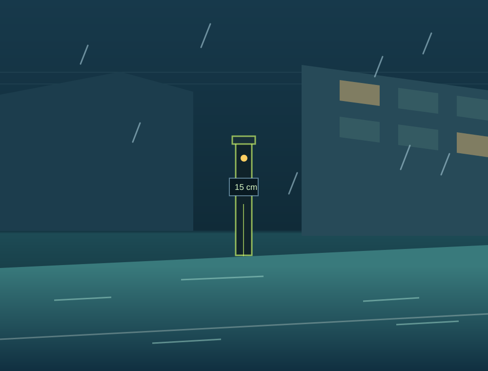
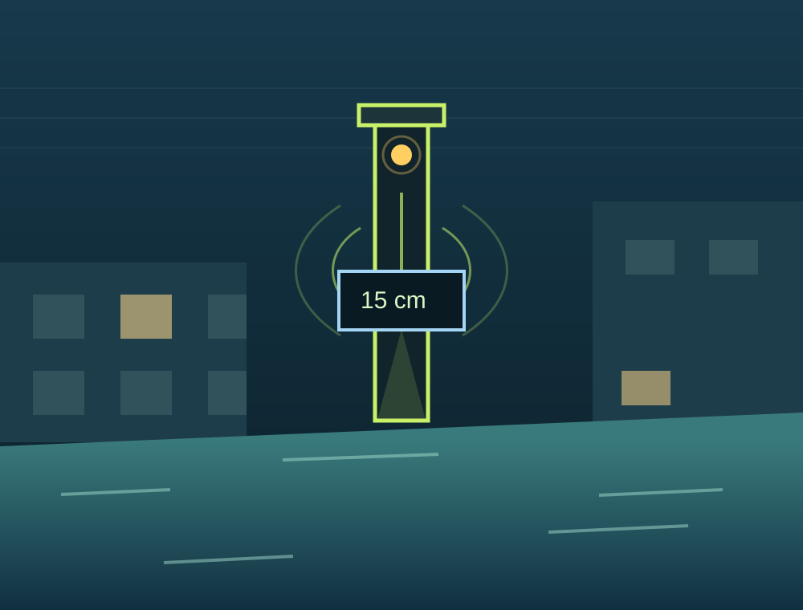
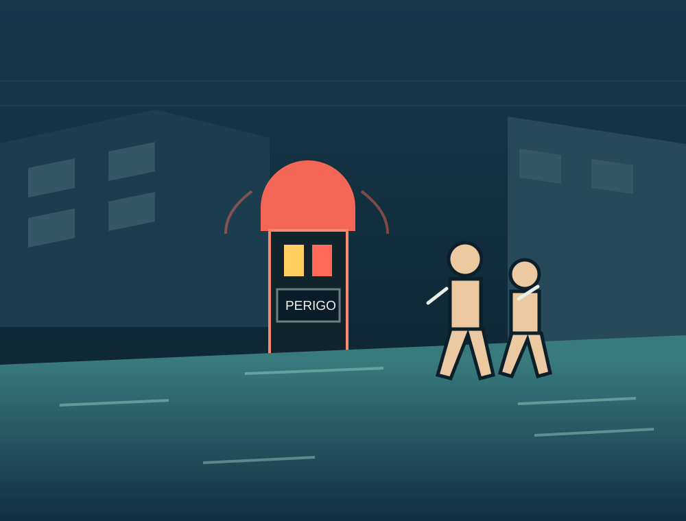

Mede e avisa
no próprio local.
O sensor ultrassônico mede a água e aciona luz, som e visor.
01Um alerta local sobre a altura da água, para ninguém precisar descobrir o risco de perto.
Em ruas que alagam, a água sobe rápido e ninguém sabe a profundidade até chegar perto demais.
Veja a tecnologia usadaÁgua em movimento nessa altura já pode derrubar um adulto.
Sensor, programa e modelo trabalham juntos para transformar uma medição em aviso.
O sensor ultrassônico mede a água e aciona luz, som e visor.
01Um programa registra as leituras e classifica o risco de cada ponto.
02Uma função simula a subida da água, ainda sem calibração com dados reais.
03O objetivo é que cada nível de água indique o que fazer, mesmo sem internet.
O nível está abaixo do limite de atenção. Continue acompanhando as condições.
Evite a rua alagada e avise quem estiver por perto.
Não atravesse. Afaste-se da água e procure um local seguro.
Moradores de áreas que alagam, pedestres, idosos e pessoas com baixa visão que passam pelo ponto crítico.
Moradores, associação de bairro, subprefeitura e Defesa Civil são parceiros possíveis, ainda não confirmados.



Luz, som e texto tornam o aviso mais acessível.
O nível ajuda a decidir se é melhor desviar e avisar alguém.
Um dispositivo por ponto crítico, após testes e validação.
entre atenção e perigo no cenário hipotético de chuva violenta do modelo.
Estimativa matemática — requer validação com dados reais.